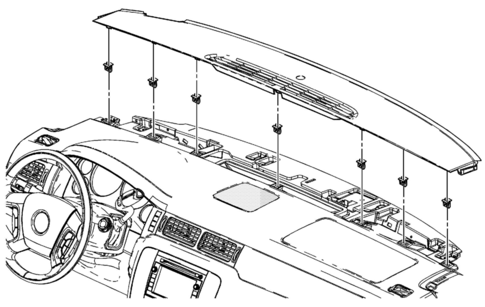
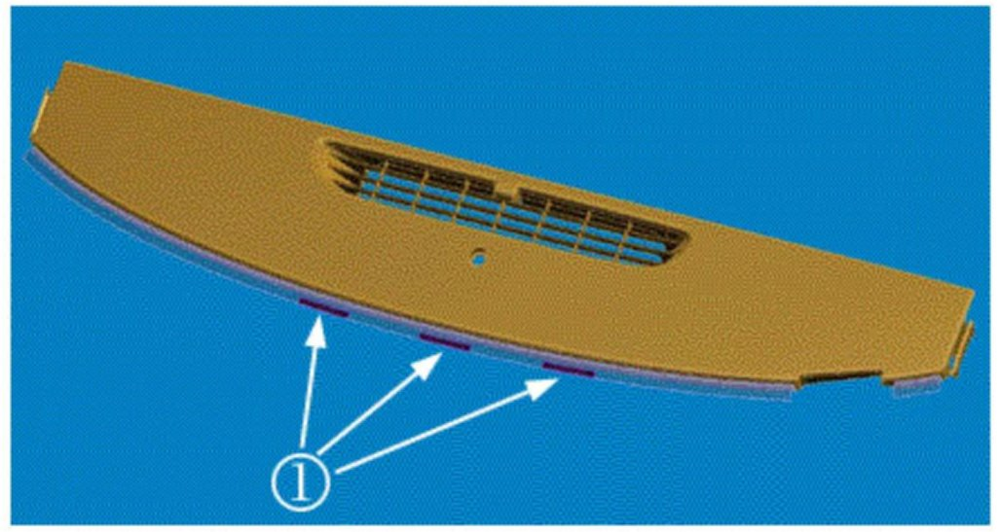
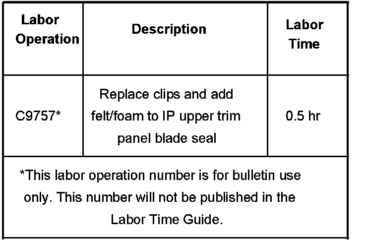

Interior - Buzzing/Rattling From Instrument Panel
Bulletin No.: 06-08-49-007BDate: June 07, 2007
TECHNICAL
Subject:
Instrument Panel (IP) Upper Trim Panel Loose, Buzz or Rattle Noise from Front of IP or Base of Windshield (Install New Clips to IP Upper Trim Panel and Add Felt to Blade Seal)
Models:
2007 Cadillac Escalade, Escalade ESV, Escalade EXT
2007 Chevrolet Avalanche, Suburban, Tahoe
2007 GMC Yukon, Yukon XL, Yukon Denali, Yukon Denali XL
Supercede:
This bulletin is being revised to update the Correction information. Please discard Corporate Bulletin Number 06-08-49-007A (Section 08 - Body & Accessories).
Condition
Some customers may comment on either or both of two conditions:
Condition # 1 - The IP upper trim panel is loose or won't stay clipped in.
Condition # 2 - A buzz or rattle noise coming from the front portion of the instrument panel or the base of the windshield when driving over any mildly or moderately rough road. The noise may be described as coming from the steering column, instrument cluster, radio/HVAC controls, or other location on the IP.
Cause
Condition # 1 may be caused by the holes in the IP upper trim panel being oversized or Mylar tape being pushed into the holes. As a result, the clips may not be properly retained, which may cause a loose fit.
Condition # 2 may be caused by the rubber blade seal at the front of the instrument panel (where it meets the windshield) not pressing firmly against the windshield glass, which may create a buzz or rattle noise when the vehicle is driven over rough surfaces.
Correction
If Condition # 1 is present, install new clips to the IP upper trim panel with windshield defroster nozzle grille (this is the forward portion of the IP upper trim panel). Also, remove excess Mylar out of the slot area to allow for better clip engagement (keep Mylar tape around the perimeter surface to prevent squeak and rattle). If Condition # 2 is also present, add three pieces of felt to the IP upper trim panel blade seal. Refer to the procedure below.
Verify that the customer concern is with the IP upper trim panel. Check to see if the IP upper trim panel is loose (Condition # 1) or if the noise (Condition # 2) can be stopped by pressing lightly downward on the top of the instrument panel near the windshield.
Disable the roof rail SIR system by removing fuse number 39 (Air Bag Ignition) and fuse number 51 (Air Bag Battery) located in the underhood fuse block. Refer to SIR Disabling and Enabling in SI.
Remove the left garnish molding cover and the 7 mm screw.
Remove the windshield garnish molding and disconnect the electrical connector.
Remove the right side handle covers, the 10 mm screws and the handle.
Remove the right windshield garnish molding and disconnect the electrical connector.
Lift up on the trim panel to disengage the clips.
Disconnect the ambient light sensor connector.

If Condition # 1 is present, remove the IP upper trim panel from the vehicle, then remove and discard the seven retaining clips. Also, remove excess Mylar out of the slot area to allow for better clip engagement (keep Mylar tape around the perimeter surface to prevent squeak and rattle).
Install the seven new retaining clips onto the IP upper trim panel with defroster grille.

If Condition # 2 is also present, install three 8 mm 80 mm (0.31 in x 3.1 in) pieces of felt (1) as shown. Install the ambient light sensor connector.
Install the IP upper trim panel with defroster grille. Make sure the rear hooks are in place and apply some pressure on the front of the panel to secure the clips into the IP.
Install the left speaker connector and windshield garnish molding. Install the 7 mm retainer screw and cover.
Tighten
Tighten the 7 mm screw to 2 N.m (18 lb in).
Install the right speaker connector and windshield garnish molding.
Install the assist handle, the 10 mm screws and covers.
Tighten
Tighten the two 10 mm screws to 6 N.m (53 lb in).
Install the roof rail SIR fuses.
Parts Information
Warranty Information

For vehicles repaired under warranty, use the table.

Disclaimer